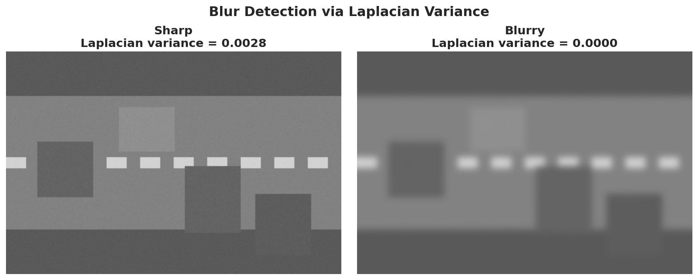
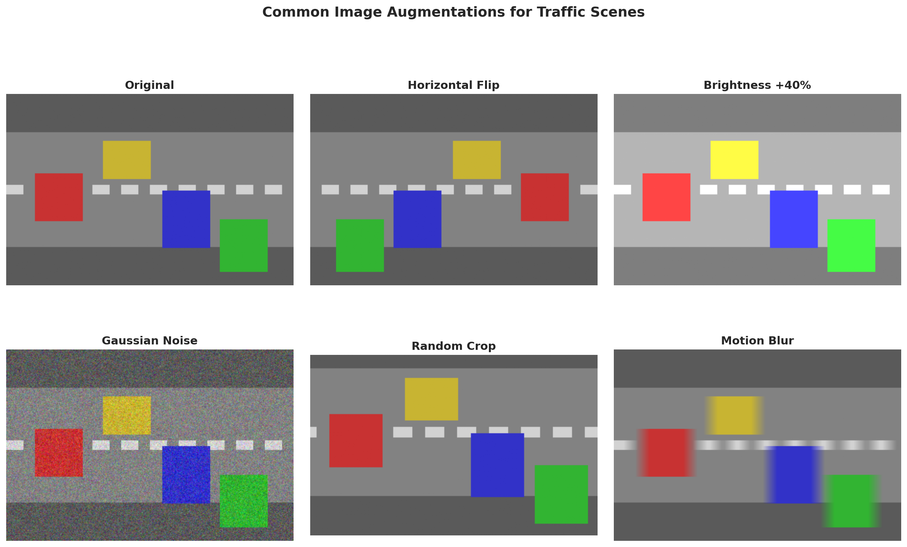
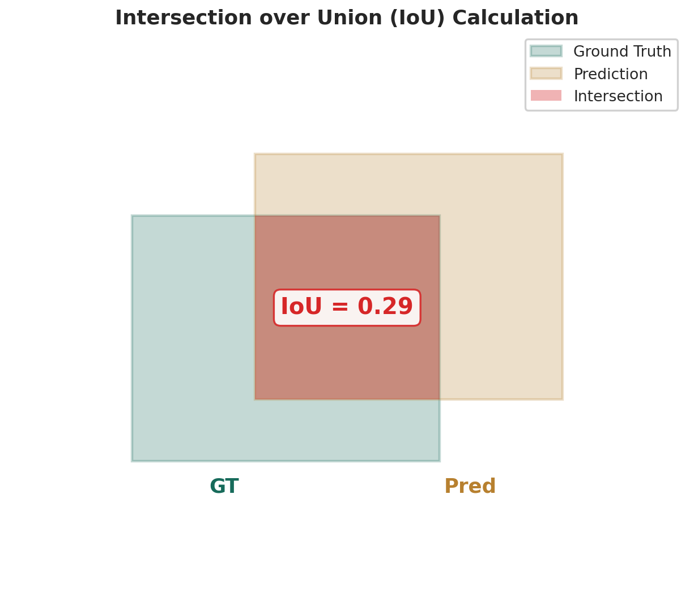
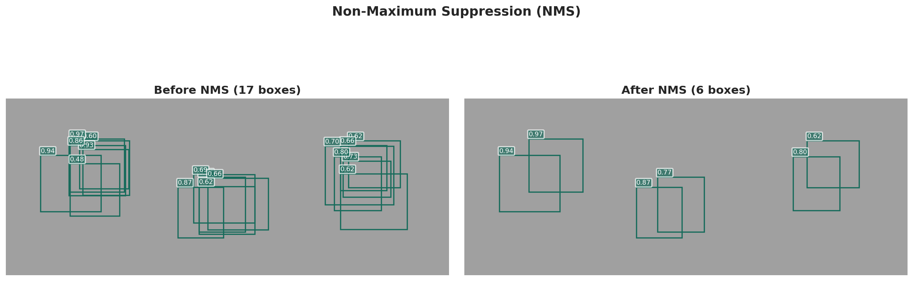
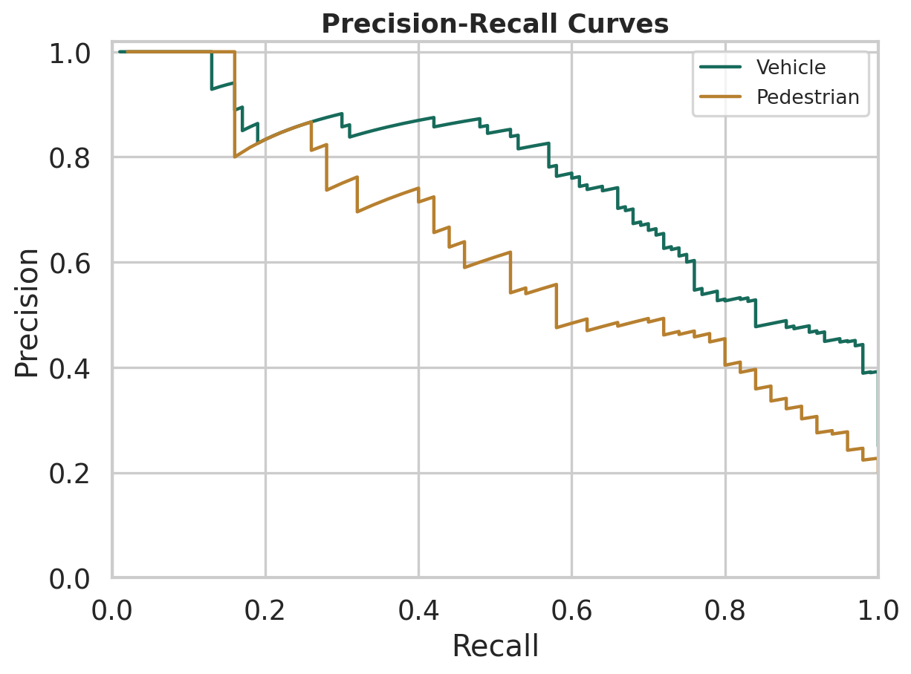
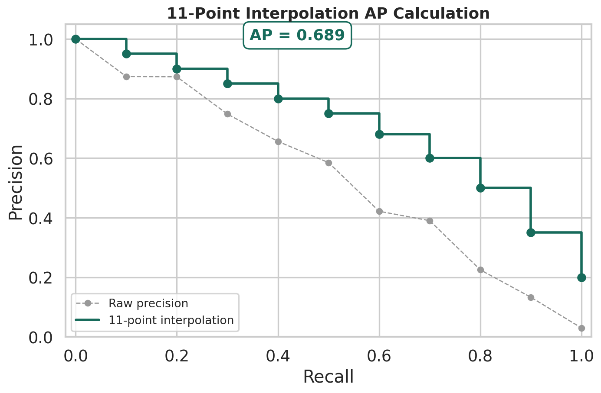
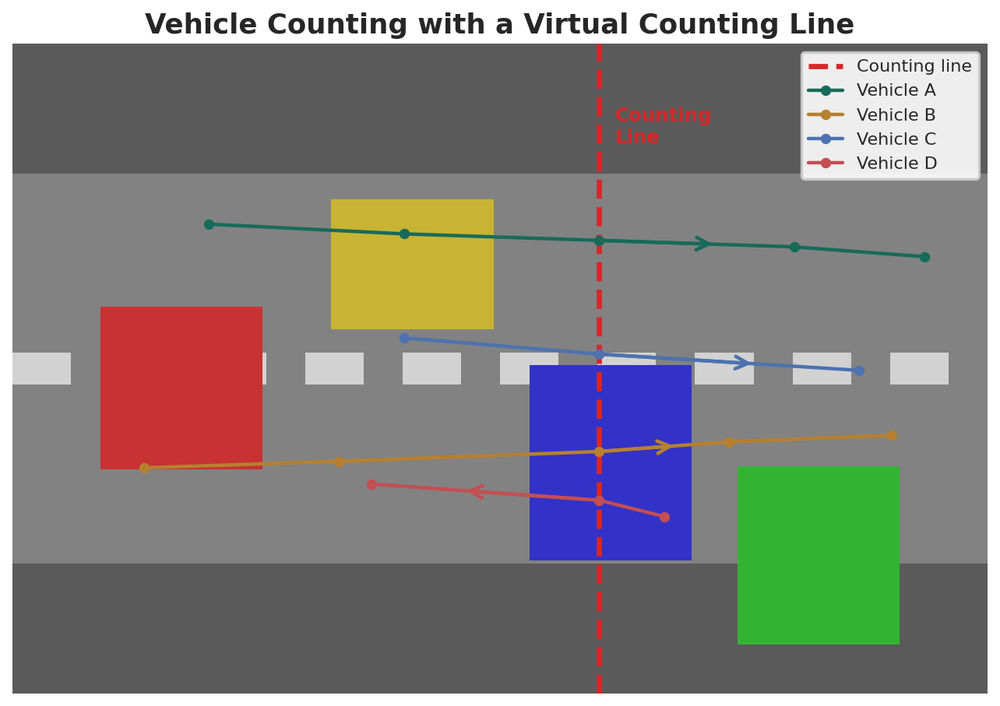
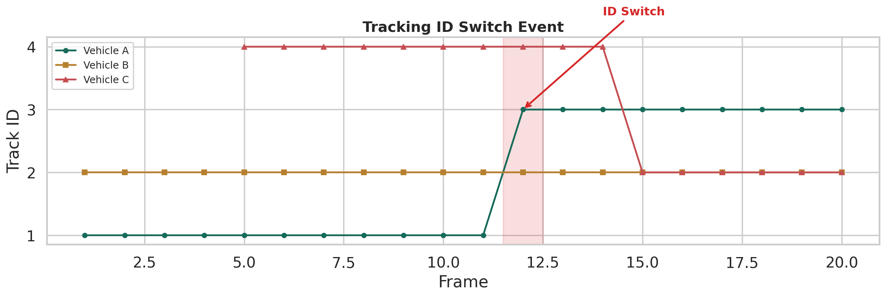
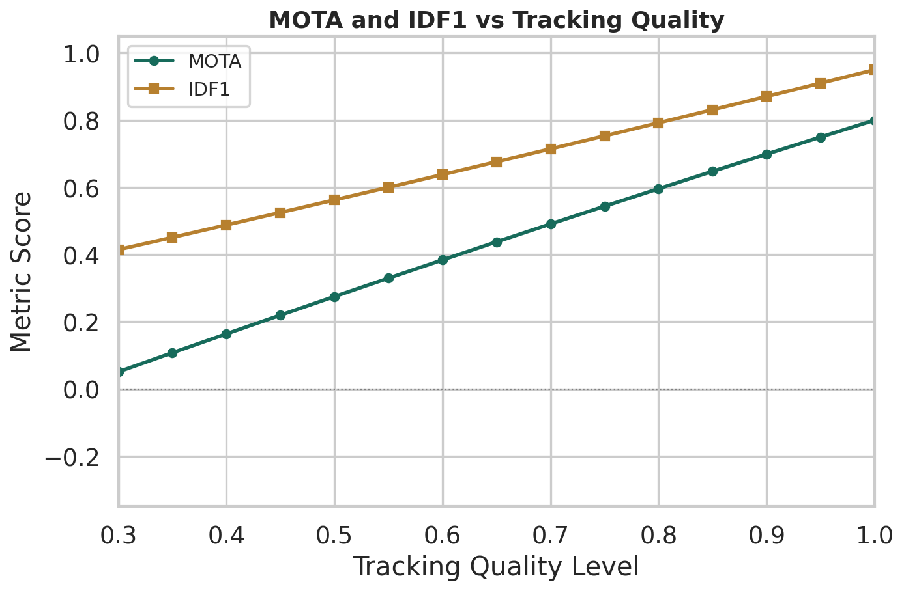
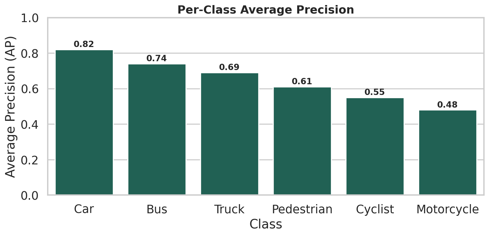

模糊检测
通过 Laplacian 方差区分清晰与模糊图像，方差越低越模糊。
Model Results
这一页展示影像分析的典型结果：图像质量控制、目标检测评价、跟踪评价和流量统计精度。
01
影像分析的第一步是保证输入图像质量。模糊检测和图像增广是最常用的预处理手段。

通过 Laplacian 方差区分清晰与模糊图像，方差越低越模糊。

翻转、亮度调整、噪声注入和随机裁剪，扩充训练样本多样性。
02
IoU 定义预测框与真实框的重叠度，NMS 去除冗余检测框，P-R 曲线和 AP 衡量检测质量。

交并比（Intersection over Union）衡量预测框与真实框的重叠程度。

非极大值抑制去除同一目标上的重复检测框，保留置信度最高的。

不同置信度阈值下的 Precision 和 Recall 权衡关系。

11 点插值法计算 Average Precision，平滑 P-R 曲线的波动。
通常 IoU ≥ 0.5 视为正确检测（COCO 标准使用 0.50:0.95 多个阈值）。阈值越高要求定位越精确，AP 值越低。
mAP（mean Average Precision）是所有类别 AP 的平均值，综合反映检测器在不同类别上的表现。mAP@0.5 使用 IoU=0.5 阈值。
| 类别 | Precision | Recall | AP | F1 |
|---|---|---|---|---|
| Car（小汽车） | 0.85 | 0.80 | 0.82 | 0.82 |
| Bus（公交车） | 0.78 | 0.70 | 0.74 | 0.74 |
| Truck（卡车） | 0.72 | 0.66 | 0.69 | 0.69 |
| Pedestrian（行人） | 0.65 | 0.58 | 0.61 | 0.61 |
| Cyclist（骑行者） | 0.60 | 0.50 | 0.55 | 0.55 |
| Motorcycle（摩托车） | 0.52 | 0.45 | 0.48 | 0.48 |
03
目标跟踪为检测框分配跨帧 ID，计数线穿越逻辑统计流量。MOTA 衡量跟踪质量，IDF1 衡量身份保持一致性。

目标中心点穿越预设计数线时触发计数，支持方向判别。

目标被遮挡后重新出现时可能分配新 ID，ID 切换是跟踪常见错误。

随着检测质量提升，MOTA 和 IDF1 均上升，IDF1 对身份一致性更敏感。
| 检测质量 | MOTA | MOTP | IDF1 |
|---|---|---|---|
| 0.3（低） | 0.051 | 0.635 | 0.415 |
| 0.5（中） | 0.275 | 0.725 | 0.562 |
| 0.7（中高） | 0.491 | 0.815 | 0.714 |
| 0.9（高） | 0.699 | 0.905 | 0.870 |
| 1.0（完美） | 0.800 | 0.950 | 0.950 |
04
不同类别的检测难度差异显著，小目标和遮挡目标（行人、骑行者）的 AP 通常低于车辆类别。

Car 类别 AP 最高（0.82），Motorcycle 最低（0.48），小目标检测仍是难点。
| 置信度阈值 | 实际数量 | 估计数量 | 绝对误差 |
|---|---|---|---|
| 0.3 | 120 | 145 | 25 |
| 0.5 | 120 | 125 | 5 |
| 0.6 | 120 | 120 | 0 |
| 0.7 | 120 | 115 | 5 |
| 0.9 | 120 | 85 | 35 |
05